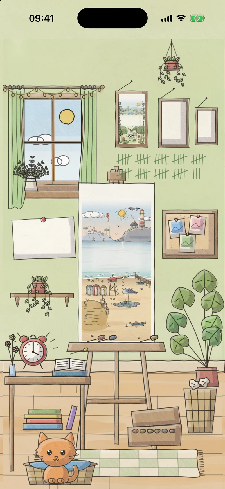
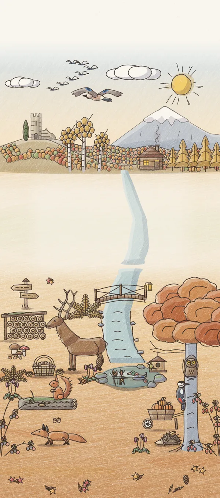

un objectif par jour.
pas une liste : un seul, celui que tu repousses depuis trop longtemps.


maintiens le cercle appuyé.
pour ceux qui repoussent depuis trop longtemps.
pour ceux qui ont une longue liste et ne commencent jamais. 1thing te fait choisir un seul objectif, petit, pour aujourd'hui.
arrête de repousser.
un objectif par jour, c'est assez petit pour vraiment commencer.
vois ce que tu as fait.
chaque objectif accompli reste : dans le tableau, dans le calendrier, sur le mur de l'atelier.
aucune culpabilité.
si tu sautes un jour, tu ne perds rien. le tableau t'attend.
un moment à toi, chaque jour.
un geste calme, un dessin qui grandit, un compagnon qui t'attend.
dans ton atelier vit un compagnon.
il t'y attend chaque jour, pendant que tu peins.
choisis qui.
ton atelier.
la pièce où tu peins, rien qu'à toi. elle grandit avec toi : chaque objectif laisse une trace, chaque tableau terminé trouve sa place aux murs.
un trait pour chaque objectif accompli.
les tableaux terminés, accrochés aux murs.



ton compagnon, qui t'attend.
rideaux, plantes, guirlandes, tapis : plus de 40 choses à choisir.
aménage-le comme tu veux.
murs, rideaux, plantes, guirlandes lumineuses, tapis : plus de 40 choses.
comment ça marche.
choisis un objectif. un seul, pour aujourd'hui.
c'est comme ça qu'on arrête de repousser : un petit pas à la fois.
quand tu l'as accompli, maintiens le cercle appuyé.
jusqu'à ce qu'il se ferme. c'est ton signe que c'est fait.
chaque objectif accompli peint un morceau du tableau.
à 30, le tableau est terminé. si tu sautes un jour, il t'attend.


le tableau change avec ta journée.
le tableau prend la lumière de l'heure où tu accomplis ton objectif.
- aube

- jour

- coucher du soleil

- nuit

chaque jour fait reste.
dans le calendrier, tu retrouves les 30 morceaux du tableau. touche un jour pour relire l'objectif, et la note que tu as laissée.
touche un jour fait pour le relire.

pourquoi ça marche.
1thing repose sur des idées que la recherche étudie depuis longtemps.
suivre ses progrès aide à atteindre ses objectifs.
une méta-analyse de 138 études : ceux qui suivent leurs progrès atteignent plus souvent leurs objectifs, surtout s'ils les notent.
dans 1thing : le tableau et le calendrier.
Harkin et collègues, Psychological Bulletin, 2016les petits pas en avant comptent.
dans environ 12 000 journaux de travail, les meilleurs jours étaient ceux d'un petit pas en avant.
dans 1thing : un petit objectif, chaque jour.
Amabile et Kramer, The Progress Principle, 2011sauter un jour ne casse pas une habitude.
en suivant 96 personnes pendant 12 semaines, manquer une occasion n'a pas changé de façon notable la formation de l'habitude.
dans 1thing : si tu sautes un jour, le tableau t'attend.
Lally et collègues, European Journal of Social Psychology, 2010se pardonner aide à moins repousser.
les étudiants qui s'étaient pardonné d'avoir repoussé les révisions d'un examen ont moins repoussé avant le suivant.
dans 1thing : aucune culpabilité, aucune série à perdre.
Wohl, Pychyl et Bennett, Personality and Individual Differences, 2010
ces études portent sur les idées à la base de l'app, pas sur 1thing.
et chaque jour, un coup de main.
-
les jours vides, je te trouve le bon objectif.
je sais ce qui compte pour toi : je te le propose, tu choisis.
-
icône et widgets comme tu veux.
huit icônes, et ton objectif sur l'écran d'accueil, dans le tableau.
-
un rappel par jour.
à l'heure que tu choisis, sur le ton que tu préfères.


qu'est-ce qu'on peint maintenant ?
quand un tableau est terminé, je l'accroche dans ton atelier et un autre commence.





un objectif par jour.
pour iPhone.